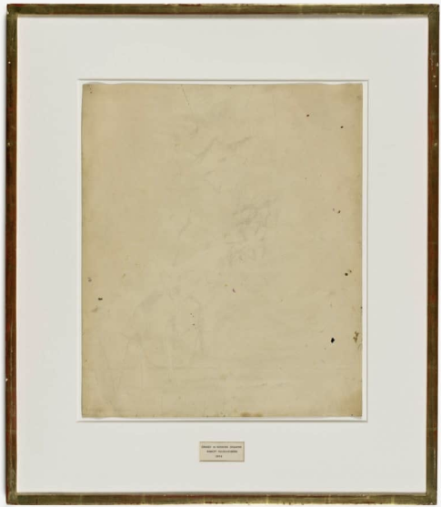

Apropriasi! Ketika Seni (sangat erat) Menginspirasi Seni Lainnya

Marcel Duchamp, L.H.O.O.Q., 1919
Truly a collaboration between three artists: Robert Rauschenberg, Jasper Johns, and of course, Willem de Kooning; Rauschenberg’s Erased de Kooning Drawing gives the audience exactly what they would expect. Confronted with a smudged but blank piece of paper framed with a simple inscription of “ERASED DE KOONING DRAWING BY ROBERT RAUSCHENBERG 1953”, the process of creation for this piece may be more captivating than its eventual appearance. Having previously experimented with the concept of drawing negatively by the removal of pencil marks with an eraser, Rauschenberg decided that this idea could only come to a truly satisfying fruition by erasing a universally renowned artist's work; that of Willem de Kooning. Though originally trepidatious, de Kooning agreed, as he determined that he did not want to get in the way of another artist's creation. After its initial exhibition in which there was no inscription at all Rauschenberg ultimately coordinated with Jasper Johns, and the inscription eventually came to be a part of the work itself.
Robert Rauschenberg's Erased de Kooning Drawing
Robert Rauschenberg, Erased de Kooning Drawing, 1953
Truly a collaboration between three artists: Robert Rauschenberg, Jasper Johns, and of course, Willem de Kooning; Rauschenberg’s Erased de Kooning Drawing gives the audience exactly what they would expect. Confronted with a smudged but blank piece of paper framed with a simple inscription of “ERASED DE KOONING DRAWING BY ROBERT RAUSCHENBERG 1953”, the process of creation for this piece may be more captivating than its eventual appearance. Having previously experimented with the concept of drawing negatively by the removal of pencil marks with an eraser, Rauschenberg decided that this idea could only come to a truly satisfying fruition by erasing a universally renowned artist's work; that of Willem de Kooning. Though originally trepidatious, de Kooning agreed, as he determined that he did not want to get in the way of another artist's creation. After its initial exhibition in which there was no inscription at all, Rauschenberg ultimately coordinated with Jasper Johns, and the inscription eventually came to be a part of the work itself.